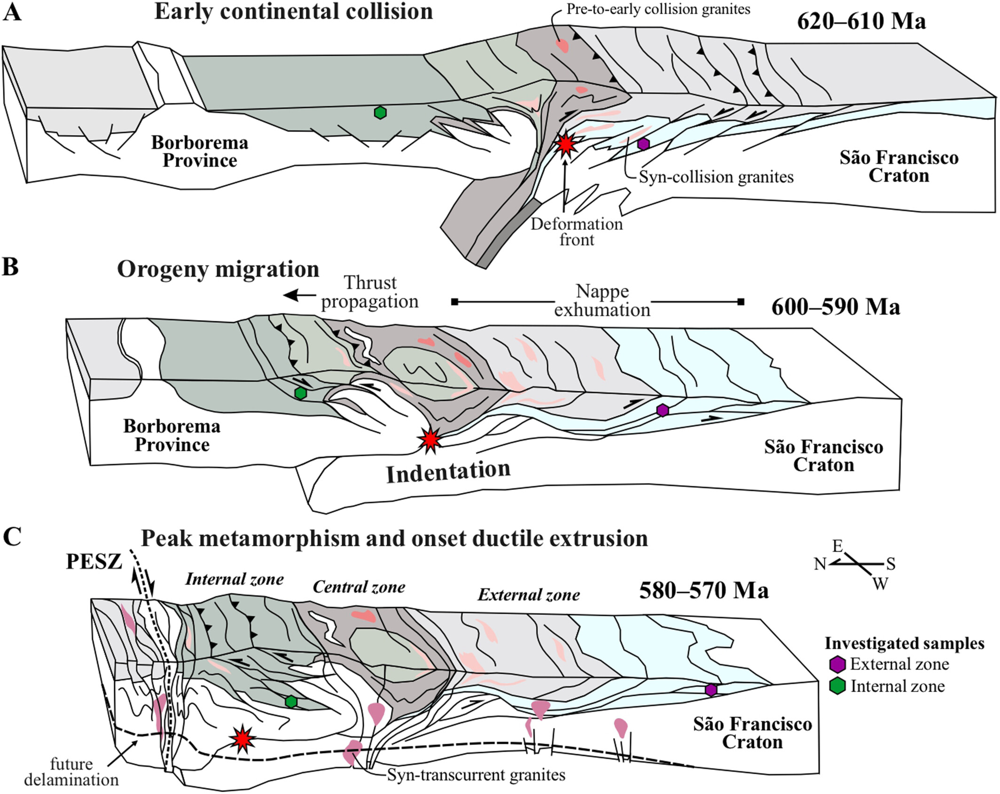

Ductile Extrusion Triggered by Continental Collision in NE Brazil

Resumo em Português
A Província Borborema, no Nordeste do Brasil, abriga uma das maiores redes de zonas de cisalhamento transcorrente do mundo, ativas durante a amalgamação do Gondwana Ocidental no Neoproterozoico tardio. Se essas zonas de cisalhamento se iniciaram durante a colisão continental ativa ou como resposta pós-orogênica a tensões de campo remoto permanece debatido. Neste trabalho, integramos petrocronologia em monazita e modelagem de equilíbrio de fases em metapelitos do Orógeno Sul da Borborema (OSB) para delimitar o momento e as condições da colisão continental. Os resultados indicam que o empilhamento de nappes direcionado para a antefossa na zona externa ocorreu entre 620 e 590 Ma, enquanto o metamorfismo de pico na zona interna foi atingido em ~580 Ma, coevamente ao início do cisalhamento transcorrente na placa superior. Esses resultados são interpretados como indicativos de que a extrusão dúctil na Província Borborema foi desencadeada pela colisão continental em andamento, em analogia com sistemas modernos de colisão-extrusão.